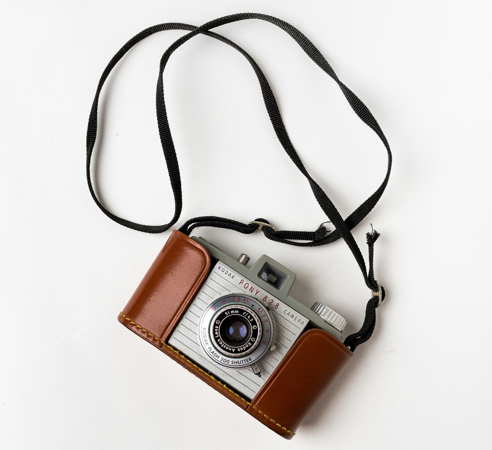
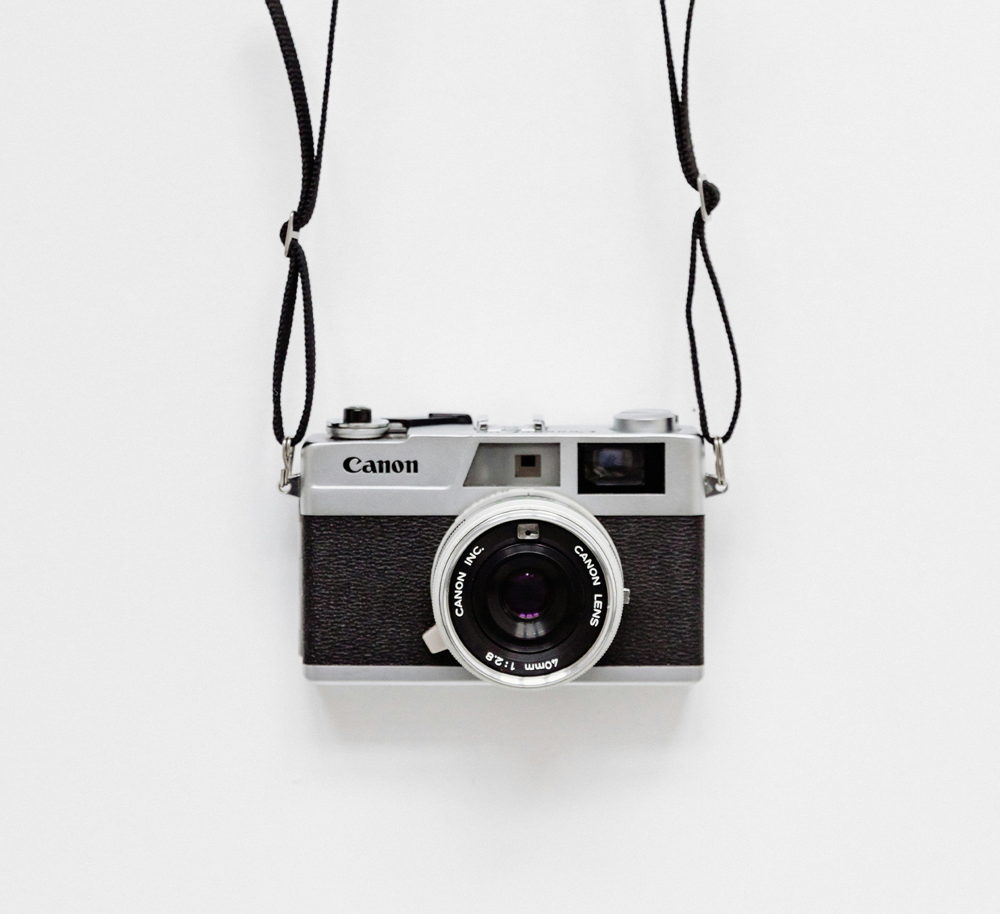
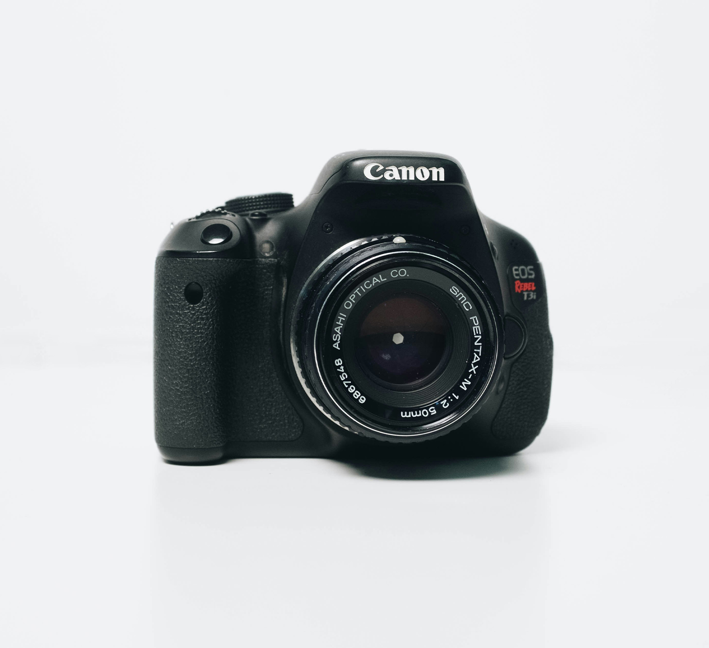

These are some of my favourite photographers you can check out for further inspiration.
Na Jaemin

Image credit: licensed under Unsplash
His Work
As photography is one of his hobbies, he made a photo exhibition named "Narcissisim" out of the personal photos he took. The button takes you to a video showing the process of his exhibition.
Yang Yongliang

Image credit: licensed under Unsplash
His Works
He is a Chinese contemporary artist who blends photography, images, and traditional Shan Shui (Chinese Landscape Painting) to show tradition and modernity together. Some of his famous projects are "Artifical Wonderland", "Five Dragons", and many more. My personal favourite is "Glows in the Arctic".
Sara Wager

Image credit: licensed under Unsplash
Her Works
She is an astrophotographer who takes pictures of space. All her photos look phenomenal and magical.